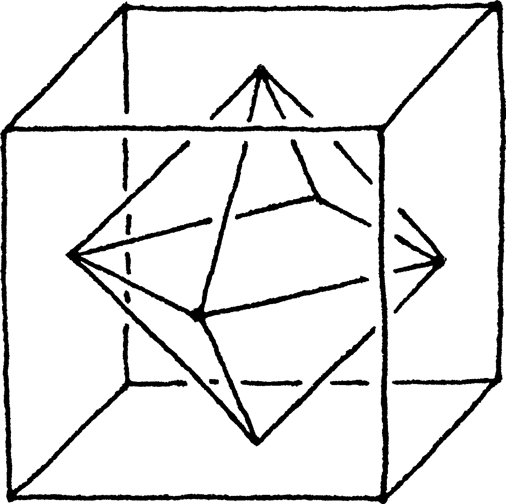
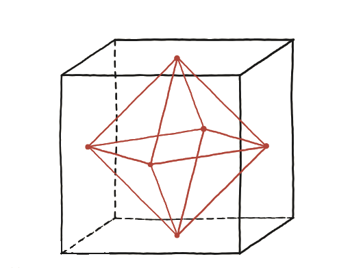

Els centres de les cares d'un cub es poden unir per formar un octaedre regular. Quina part del volum del cub ocupa?

Un avís abans de començar
En un dibuix en perspectiva els angles rectes del cub no semblen rectes. Cal fiar-se de l'objecte, no del dibuix.
Tria unes coordenades netes
Posant el cub amb centre a l'origen i costat 2 —vèrtexs a (±1,±1,±1)—, els sis centres de cara surten (±1,0,0), (0,±1,0), (0,0,±1): més nets que amb costat 1. L'octàedre que formen aquests sis punts es pot partir en dues piràmides iguals, unides per la base. Quina és la base, i quina l'alçada de cadascuna?
La construcció
L'octàedre, marcat en vermell, amb el seu "equador" —el quadrat que formen els quatre vèrtexs laterals— separant-lo en dues piràmides bessones, una amunt i una avall.

Tancar-ho
Cada piràmide té per base el quadrat que formen quatre dels sis centres —per exemple (±1,0,0),(0,±1,0), un quadrat de diagonal 2— i per alçada la distància fins al cinquè centre, (0,0,1), que és 1. Volum d'una piràmide = (1/3)·base·alçada. Sumant les dues piràmides i comparant amb el volum del cub (2³=8) surt la fracció que ocupa.
L'octàedre format pels centres de les sis cares d'un cub ocupa exactament 1/6 del volum del cub.
Comprovació
Àrea del quadrat base (diagonal 2, costat √2): (√2)² = 2. Volum d'una piràmide: (1/3)×2×1 = 2/3. Dues piràmides: 4/3. Fracció del cub: (4/3)/8 = 1/6.